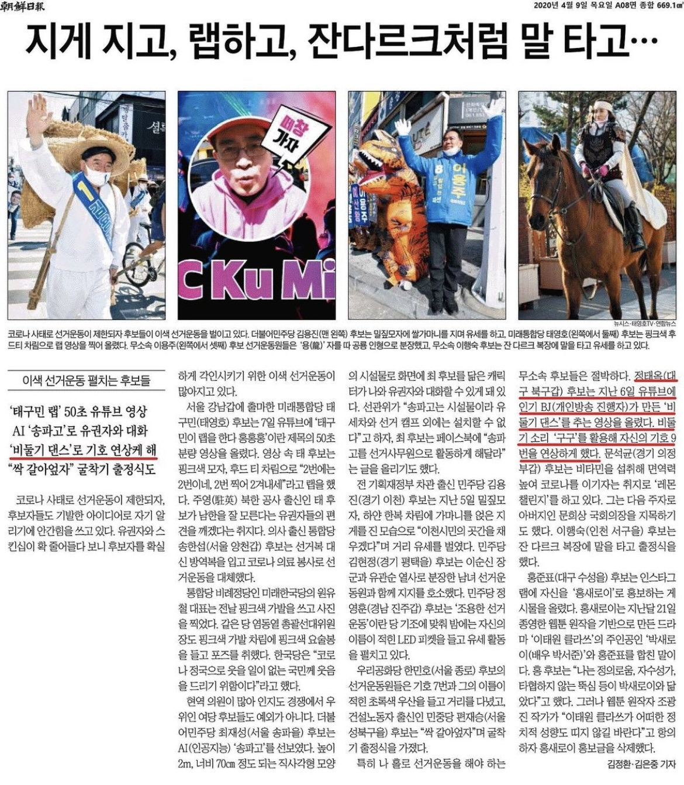

LATEST VIDEO CONTENTS
I handled all end-to-end processes for these YouTube channels except being in front of the camera.
This included storyboarding, shooting, and post production. I always try to create various content based on the characteristics and trends of the target audience.
(Click the image to go to the YouTube channel)
-
Korean Steak Channel
I created this YouTube channel as a marketing channel for a company.
Since meat is a creature, cleanliness and freshness are important in the process of bone removal,
and the manufacturing process was highlighted by the videos. Prospective customers enjoyed watching the videos as part of their research before purchasing our products.
The channel quickly gained over one million views within 6months, reflecting the increase in consumer trust in our product and increasing sales.
-
Know-it-all Channel
People in their forties and fifties in Korea make up the majority of the Korean YouTube audience.
However, I felt that there was not enough content for them, so I opened a channel called 'Middle-Aged Know It All.' I handled scriptwriting, planning, filming, editing, and SEO. And as a result of analyzing the trending keywords in that demographic, the channel grew to over 3,000 subscribers within 6 months, attracted more than five advertisers, and generated profit.
-
Viral Dancing video
I planned, filmed, edited, and marketed promotional videos for a Korean National Assemblymen's campaign targeting men in their twenties and thirties to raise awareness and increase voter turnout.
The pigeon dance video was viewed more than 3,000 times on the day of its release and was introduced as a viral video on other election-related YouTube channels and many internet communities.
The video was also mentioned by the oldest newspaper in Korea, Chosun Ilbo, calling it "candidates conducting unusual campaigns - reminiscent of symbols with ‘pigeon dance’."
